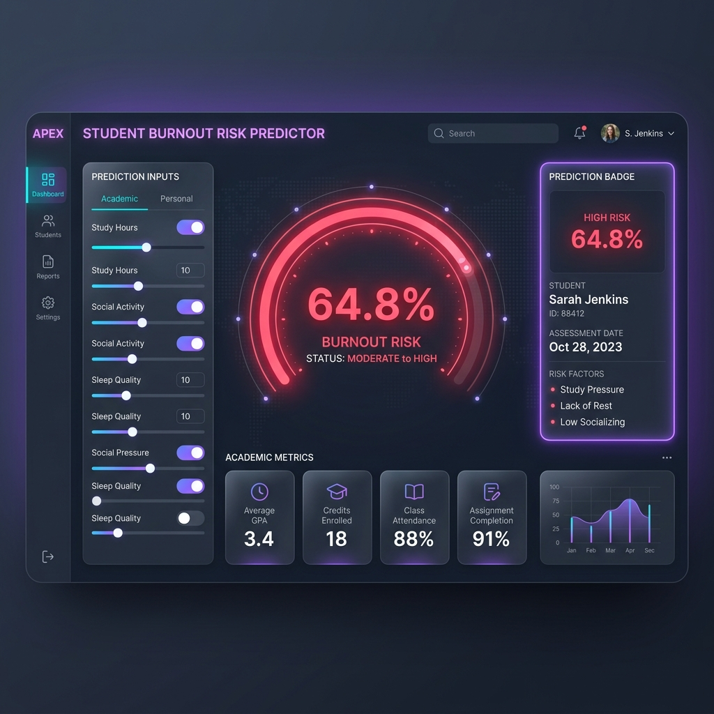
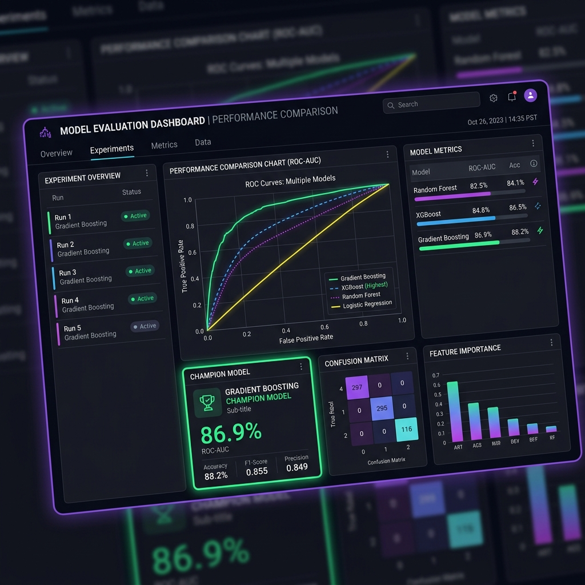
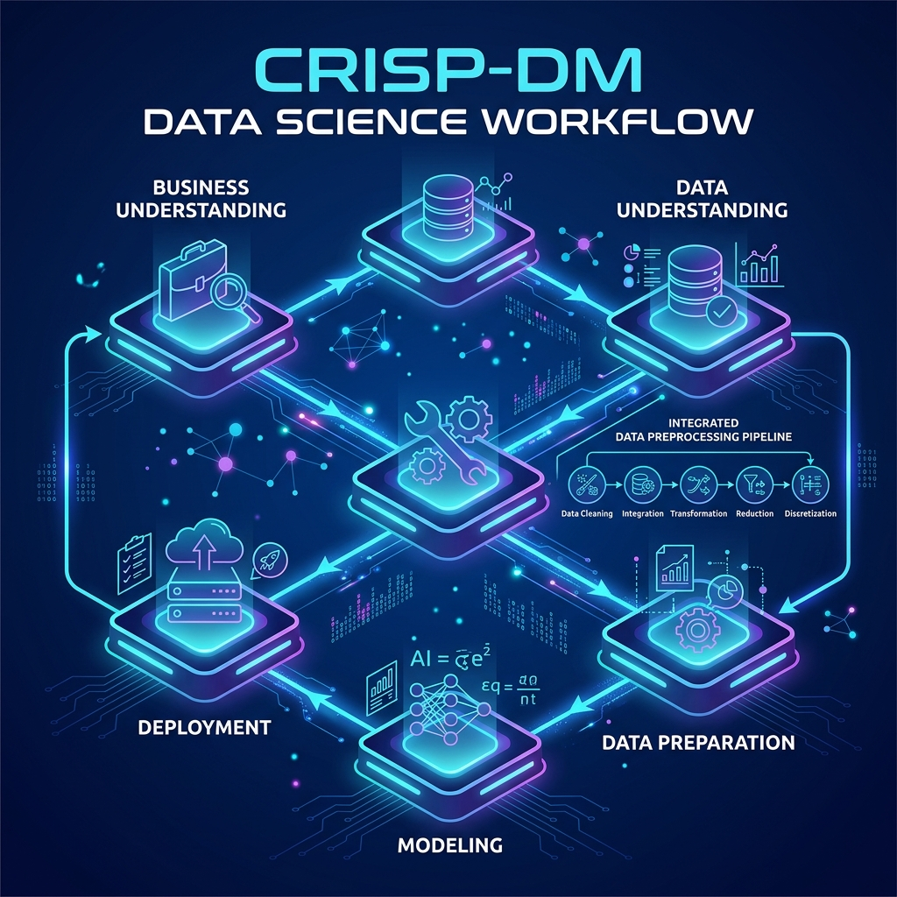

Öğrencilerin tükenmişlik risklerini henüz ortaya çıkmadan tespit eden, yapay zeka destekli proaktif bir karar destek sistemi. Kurumunuzun eğitim kalitesini ve öğrenci memnuniyetini yenilikçi analizlerle bir adım öteye taşıyın.

APEX, öğrencilerin yapay zeka araçları kullanım alışkanlıklarının, çalışma rutinlerinin ve sınav kaygısının Akademik Tükenmişlik (Burnout) üzerindeki etkilerini analiz eden karar destek altyapısıdır.
İş probleminden canlı yayına uzanan 6 fazlı endüstriyel süreç.
Plotly tabanlı korelasyon haritaları ve interaktif dağılımlar.
Hiperparametreleri optimize edilmiş XGBoost algoritması.
Tükenmişlik süreci zamanında tespit edilmezse öğrenci kaybına ve motivasyon düşüklüğüne yol açar. APEX, potansiyel riskleri henüz dönem bitmeden belirleyerek eğitim kurumlarına stratejik rehberlik imkanı sunar.
Öğrencileri akademik başarısızlık veya yoğun stres safhasına geçmeden önce tespit eder.
Rehberlik ve danışmanlık hizmetlerinizi doğrudan yardıma ihtiyacı olan öğrencilere odaklamanızı sağlar.
Öğrenci bağlılığını ve başarısını artırarak kurumsal prestije ve veli memnuniyetine doğrudan katkı sunar.


Öğrenci parametreleri, veri sızıntısını engelleyen ön işleme hattından geçerek tahmin modeline aktarılır:
Haftalık AI saati, sınav kaygısı ve çalışma dengesi incelenir.
ColumnTransformer ile encoding ve scaling işlemleri güvenle tamamlanır.
0.53 karar eşiğine göre öğrencinin anlık risk düzeyi ve tavsiyeler üretilir.
APEX projesinin teknik altyapısını oluşturan ana bileşenler ve yetenekler.
Tüm Keşifsel Veri Analizi (EDA) grafikleri Plotly ile oluşturulmuştur. İnteraktif yapısıyla veri kümesindeki gizli anksiyete ve tükenmişlik korelasyonlarını görselleştirir.
Her öğrencinin yapay zeka kullanım alışkanlığı, haftalık çalışma süreleri ve kaygı düzeyini dikkate alarak kişiye özel tükenmişlik risk sonuçları üretir.
Akademik tükenmişlik belirtilerini öğrenciler ciddi motivasyon kaybı yaşamadan çok önce yakalayarak kurumlara hızlı müdahale şansı tanır.
Eğitim danışmanları ve rehber öğretmenler için model sonuçlarına dayalı, doğrudan uygulanabilir ve etkili aksiyon önerileri sunar.
Canlıya alınan model, Streamlit arayüzü ile sunulur. Kullanıcılar bölüm, AI saati ve stres seviyelerini girerek anlık tükenmişlik risk oranını görebilir.
Projemiz, endüstri standardı CRISP-DM metodolojisinin 6 fazına (İş Anlayışından Dağıtıma kadar) tam uyumlu şekilde tasarlanıp belgelenmiştir.
Her ekip üyesi CRISP-DM'in farklı fazlarından sorumludur.
Veriyi anlama ve keşifsel analiz adımlarını yönetti.
Veri ön işleme ve sistem altyapısını tasarladı.
Makine öğrenmesi modellerini eğitti ve değerlendirdi.
Uygulamanın yayına alınması ve arayüz geliştirmelerini üstlendi.
APEX projesi hakkında merak edilen sorular ve yanıtları.
ai_student_impact_dataset.csv veri seti kullanılmıştır. Öğrencilerin akademik bölümü, sınıfı, haftalık AI kullanım saatleri, AI kullanım amacı, geleneksel çalışma süreleri, sınav dönemi kaygı düzeyleri ve algılanan AI bağımlılıkları gibi zengin akademik parametreleri barındırmaktadır.
Logistic Regression, Decision Tree, Random Forest, XGBoost, LightGBM, AdaBoost, KNN, SVM, Naive Bayes ve Gradient Boosting dahil 10'dan fazla sınıflandırma modeli 5-katlı Tabakalı Çapraz Doğrulama (Stratified Cross-Validation) ile eğitilerek yarıştırılmıştır.
Tüm preprocessing (veri ön işleme) adımları scikit-learn ColumnTransformer ve Pipeline mimarisiyle kurulmuştur. Akıllı veri mühendisliği ve target encoding fit işlemleri sadece eğitim setinde (train fold) gerçekleştirilmiş, test setine sızıntı sıfırlanmıştır.
En iyi modelimiz olan XGBoost, bağımsız test veri setinde yüksek doğruluk ve ROC-AUC değerlerine ulaşmıştır. Yanlış alarm oranını (false positive) en aza indirmek ve kurumsal kaynakları doğru yönetmek amacıyla optimize edilen modelimiz, risk grubunu saptamada yüksek kesinlik sunmaktadır.
CRISP-DM (Cross-Industry Standard Process for Data Mining), veri projelerinde hata oranını minimize eden 6 aşamalı döngüsel bir standarttır: İş Anlayışı, Veri Anlayışı, Veri Hazırlama, Modelleme, Değerlendirme ve Dağıtım.
Streamlit uygulamamızın 'Tükenmişlik Tahmini' sekmesinde, bir öğrencinin haftalık AI saati, sınav kaygısı ve çalışma süresi gibi 12 temel parametresi girilerek %0 ile %100 arasında bir risk olasılığı üretilir ve buna bağlı akademik rehberlik önerileri otomatik olarak sunulur.
Formu landing page'den kaldırdık. Canlı Streamlit demosuna tek tıkla geçebilirsin.